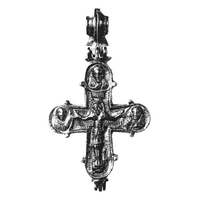
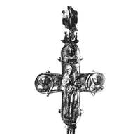

Catalog › CE-0727 · KOR2003-II.1.1.107
Encolpion întreg cu inel de agățare dublu ornamentat, Răstignire, Sf. Ioan și Maica Domnului, Odighitria
sec. XII (1101–1200) · Sevastopol (Chersonesos), Crimeea, Ucraina · Ermitajul de Stat (GE), Sankt Petersburg, inv. Х 207
double-sided reliquary cross (enkolpion), aramă; c. XII (1101–1200); found at Sevastopol (Chersonesos), Crimeea, Ucraina; kept at Ermitajul de Stat (GE), Sankt Petersburg.




Identificare
- Categorie
- Encolpion bivalv (relicvar)
- Material
- Aramă
- Tehnică
- Turnare în relief; Gravare (incizie)
- Stare
- Întreagă
- Dimensiuni
- Î 88 × L 77 mm
Iconografie
- Avers
- Sf. Nicolae; Sf. Ioan
- Descriere avers
- Encolpion întreg, cu inel de agățare din două valve, ornamentat; imagini în relief clare, retușate fin cu dalta; pe contur, bordură zimțată. Pe valva de față Răstignirea, cu lemnul crucii evidențiat pe traversă, cu suppedaneum și tăbliță (cu literele IC XC), completată cu două ramuri „în brăduț” de o parte și de alta a suppedaneumului (trestie și lance?). În medalionul de sus imagine bust de ierarh, probabil Sf. Nicolae (se vede omoforul cruciform); în medalioanele laterale adstanții, așezați nestandard: la stânga lui Hristos (la mâna dreaptă) Sf. Ioan Evanghelistul (Teologul), la dreapta (la mâna stângă) Maica Domnului, ceea ce corespunde și inscripțiilor. Din această cauză, în interiorul valvei au fost cu aceeași intenție incizate inscripții care par să corecteze eroarea meșterului: pe capătul cu Maica Domnului este clar trasat în interior НОАНЪ; pe capătul de sus al valvei este o inscripție în interior, dar neclară.
- Revers
- Maica Domnului cu Pruncul; Neidentificat
- Descriere revers
- Pe valva de revers, imagine ceva mai puțin distinctă a Maicii Domnului Odighitria și trei imagini bust de sfinți în medalioane. După unele trăsături iconografice se poate presupune că sunt sfinți militari (toți cu păr scurt, mantale prinse pe umărul drept). Inscripții adâncite, deplasate: la stânga imaginii Maicii Domnului cu Pruncul ГН/О[С]/Н[Д], la dreapta NЄ/Τ[Ο]/СГЬ/Р. Imaginile și inscripțiile sunt în relief și adâncite; alte inscripții în afara monogramelor nu se citesc, se vede doar o linie despărțitoare orizontală adâncită de o parte și de alta a Maicii Domnului.
- Inscripții
- față: IC XC (în tăbliță); НОАНЪ (stânga, medalion); MP ΘY (dreapta, medalion); НОАНЪ (în interior, pe același capăt). revers: ГН/О[С]/Н[Д] (stânga Maicii Domnului); NЄ/Τ[Ο]/СГЬ/Р (dreapta)
- Limba
- Greacă
Datare și atribuire
- Datare
- sec. XII (1101–1200)
- Centru
- Necunoscut
- Tipologie
- Korzukhina–Peskova 2003, tip II 1 1
Descoperire
- Localitate
- Sevastopol (Chersonesos)
- Regiune
- Crimeea
- Țară
- Ucraina
- Context
- Așezare
- Anul
- 1902
Păstrare și referințe
- Colecție
- Ermitajul de Stat (GE), Sankt Petersburg
- Nr. inventar
- Х 207
- Bibliografie
- G. F. Korzukhina, A. A. Peskova, Древнерусские энколпионы. Нагрудные кресты-реликварии XI–XIII вв., Sankt-Petersburg, 2003 [Korzukhina–Peskova 2003], p. 73, cat. nr. II 1 1/107, reprodusă la Табл. 29 (planșe, p. 271). Bibliografie citată în sursă: ОАК 1902 39 рис. 66а, 6 на с. 40; ИАК 1904 в. 9, с. 54–55, рис. 33а, 6; Корзухина 1958 табл. II 2а, 6; Корзухина, архив ф. 77, д. 16, л. 5, 7–8.
- Figura
- Табл. 29
- Planșe
- Korzukhina–Peskova 2003, Табл. 29 (planșă fără paginație proprie în PDF; p. 271 tipărită)
- Observații
- Datare după Peskova: sec. XII. Circumstanțe: Săpături 1902, K. K. Kostiușko-Valiujinici, în centrul acropolei vechi (partea de vest a gospodăriei mănăstirești); descoperire întâmplătoare în strat amestecat. Lectura inscripțiilor de pe revers este nesigură (de verificat pe original). Negative: НФ ИИМК РАН Q 513, 14 și 15 (foto Ainalov), nr. II 26768–26780. Coordonate: nu sunt date în sursă.
Citare: Corpus Encolpiorum, CE-0727, Encolpion întreg cu inel de agățare dublu ornamentat, Răstignire, Sf. Ioan și Maica Domnului, Odighitria, --root/piese/KOR2003-II.1.1.107/ (accesat 2026-10-20).